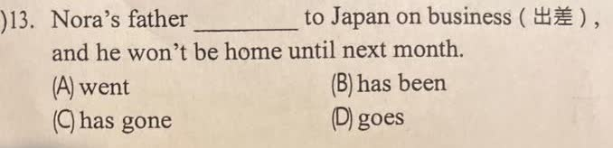

分享原卷｜第13題
完整原題
先想一想，再查看答案、解說與原圖
逐項解析
| 選項與原句 | 判讀 | 句意與判斷理由 |
|---|---|---|
| (A) went | 文法可成立 | 可以敘述過去已發生的出發，且不必明寫時間；不能將它當文法必錯。本題教材意圖較直接用has gone強調未返。 |
| (B) has been | 不選 | 一般教材用has been to表達曾造訪或已完成往返，不是本題這次出差未返的預期搭配。 |
| (C) has gone | 教材預期 | has gone to直接對應出差已去、下月才回的目前狀態，為本題教材預期。 |
| (D) goes | 不選 | goes常指習慣性或一般情況，與這次出差未返的語境不如C相合。 |
詳細說明與解題步驟
後半句he won’t be home until next month說明爸爸到下個月才回家。國中教材對照been to與gone to時，has gone to用來強調已去而尚未返回，因此本題預期C。
翻譯：Nora的爸爸已到日本出差，要到下個月才會回家。
B的has been to通常描述曾造訪的經驗或完成往返，不如has gone to直接對應這一次出差未返；D的goes通常描述習慣性往來，也不是此句所要凸顯的狀態。
A必須另外說清楚：went是合法的過去式，過去發生的出發動作可以用went敘述，並不一定要附last week等時間詞。「Nora’s father went to Japan on business, and he won’t be home until next month.」亦可成句，前半敘述已發生的出發，後半補充未來歸期。
所以不能沿用原AI以「過去式通常需要明確的過去時間副詞」排除A的說法，誤教成沒寫時間就一定不能用過去式。本題保留教材預期C，並註明A不是單憑文法就能判錯；原四選項不擅改。
核對：[Cambridge：been or gone](https://dictionary.cambridge.org/grammar/british-grammar/been-or-gone)、[過去式的時間詞可以省略](https://learnenglish.britishcouncil.org/free-resources/grammar/english-grammar-reference/past-simple?hc_location=ufi&page=1)。
核對註記：完整原卷題幹與四選項已核對；以教材預期C整理，明確保留A亦可成句及時間詞非必需的限制，另列教師確認。
原圖（僅本題）
